User Interface Walkthrough¶
UI-01 Attract Loop and Home Screen¶
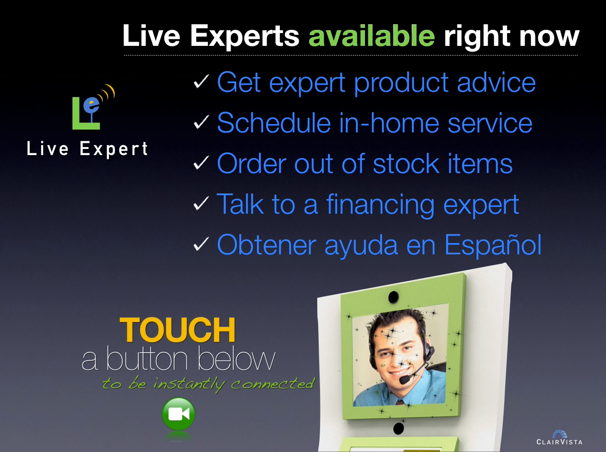{kind=link}
Top Display: VIDEO-01
An attract loop plays continuously.
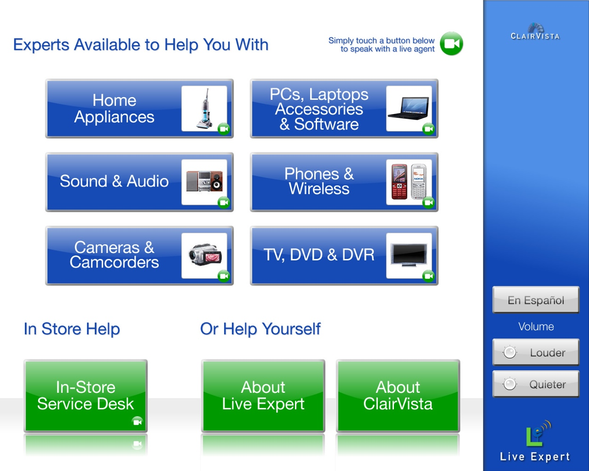{kind=link}
Bottom Display: In attract loop mode, the home screen is presented with Expertise Category buttons and optional self service buttons.
UI-02 Self-Service Content¶
Customer elects to browse self service content by selecting one of the self service buttons.
{kind=link}
Top Display: The top display dims. Focus is on the bottom display.
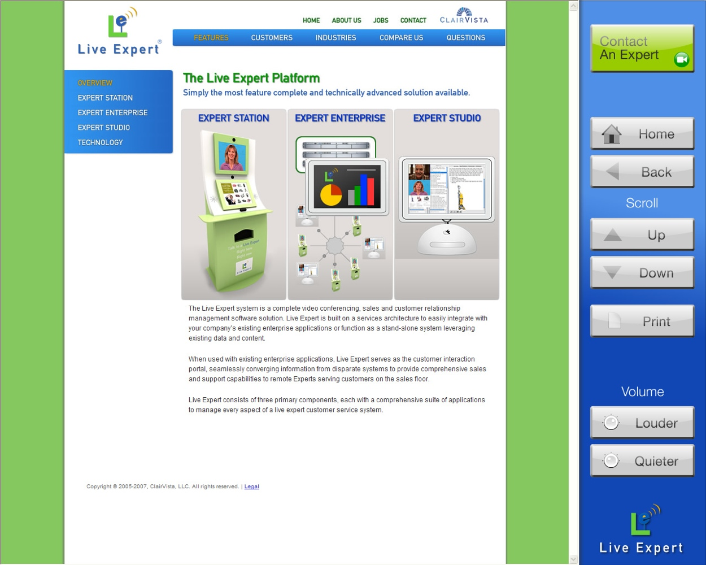{kind=link}
Bottom Display: The customer navigates content just like browsing the web. Browser controls are added to the sidebar as well as a general Contact an Expert button.
UI-03 Connecting to an Agent¶
The customer requests an agent and the application determines a qualified expert is available to assist the customer.
Top Display: The top display dims. Focus is on the bottom display.
{kind=link}
Bottom Display: MSG-01
An animation is looped to indicate to the customer that the connection is progressing while the application sends an invitation for the expert to accept. This step should take no more than 15 seconds, ideally, only a few.
UI-04 No Agents Available or Staffed¶
There are no agents logged in or available when a customer requests to speak with an agent.
Top Display: The top display dims. Focus is on the bottom display.
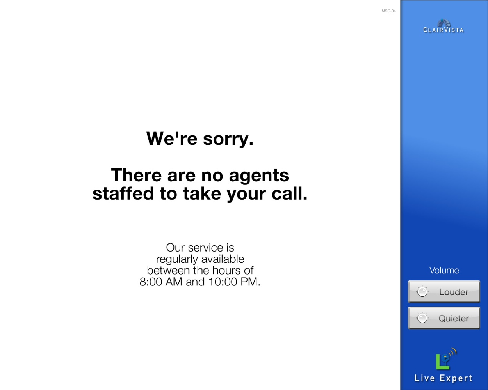{kind=link}
Bottom Display: MSG-04
No agents available or staffed.
UI-05 Agents Busy - Wait¶
Agents are logged in, but are busy helping others when a customer requests an agent.
Top Display: The top display dims. Focus is on the bottom display.
VIDEO-01: Optionally, a movie can be played to capture the customer’s attention while the customer waits for the next agent to become available.
{kind=link}
Bottom Display: MSG-02
A message indicating that all agents are busy helping other customers. Customers are presented with the option to either wait for the next available agent or exit the station.
UI-06 Connect to Next Available Agent¶
The customer elects to wait for the next available agent.
Top Display: The top display dims. Focus is on the bottom display.
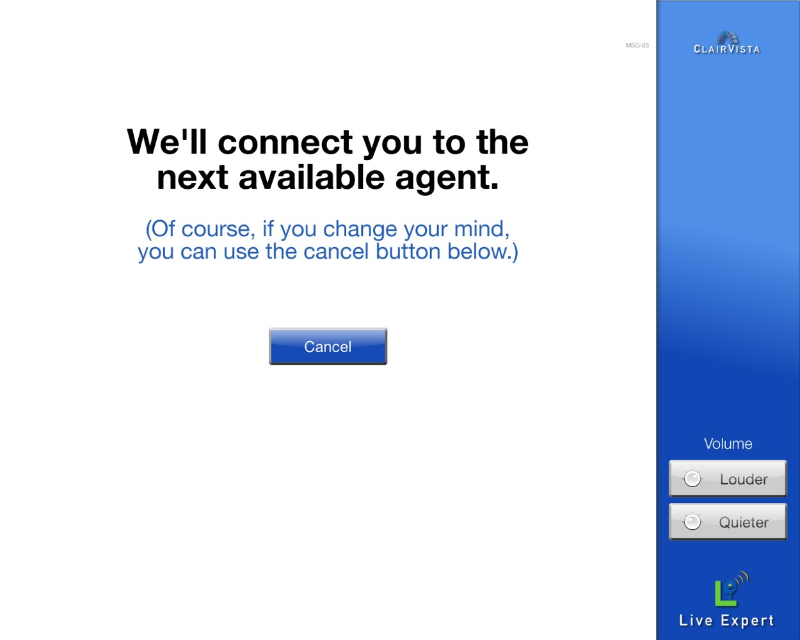{kind=link}
Bottom Display: MSG-03
A message is displayed indicating that the customer will be connected to the next available agent.
UI-07 Continue to Wait¶
The customer elected to wait for the next available agent and the configurable timer was reached. The application interacts with the customer to indicate that he or she hasn’t been forgotten and is still in queue for the next available agent.
Top Display: The top display dims. Focus is on the bottom display.
VIDEO-02 A video can be played.
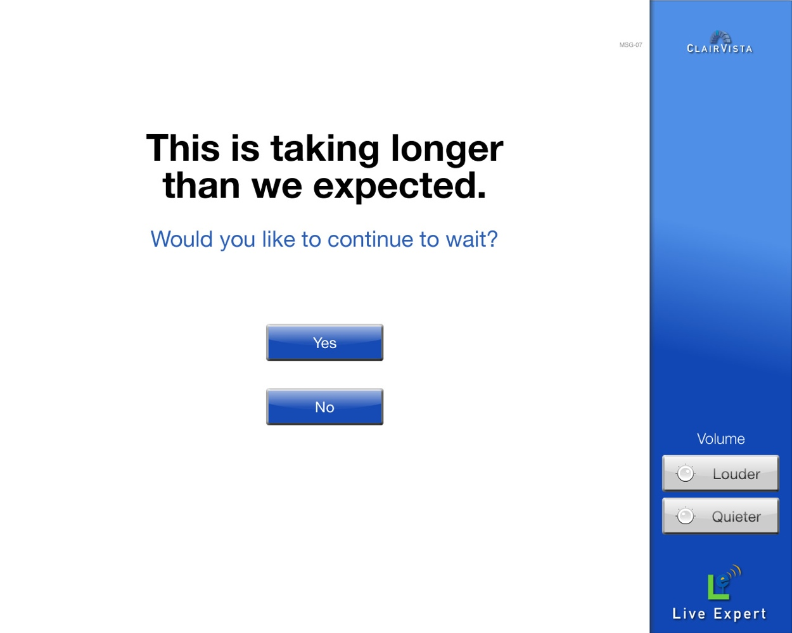{kind=link}
Bottom Display: MSG-07
A message is displayed indicating that the wait is taking longer than expected.
UI-08 Video Call¶
The customer and agent are connected in a video call.
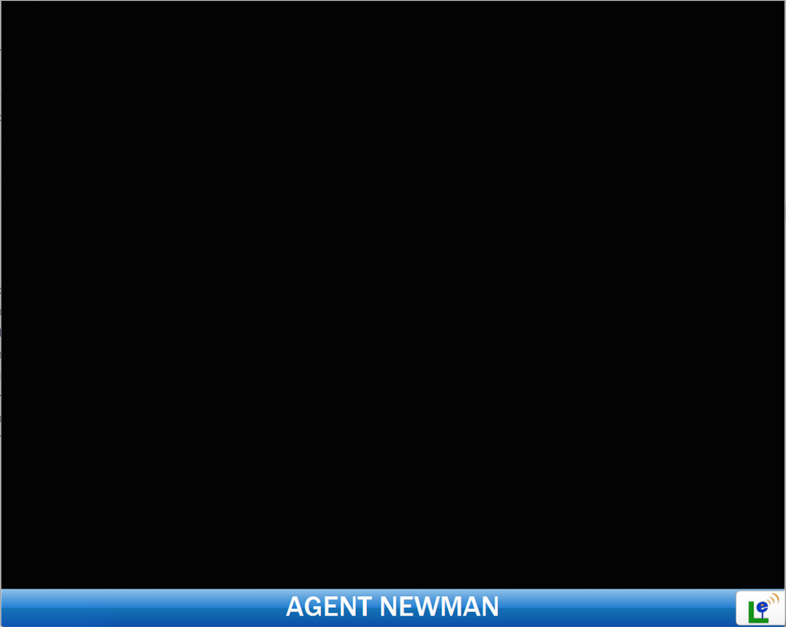{kind=link}
Top Display: The agent appears for the customer. The agent’s name is displayed as indicated in the Display Name field set in the Expert Enterprise.
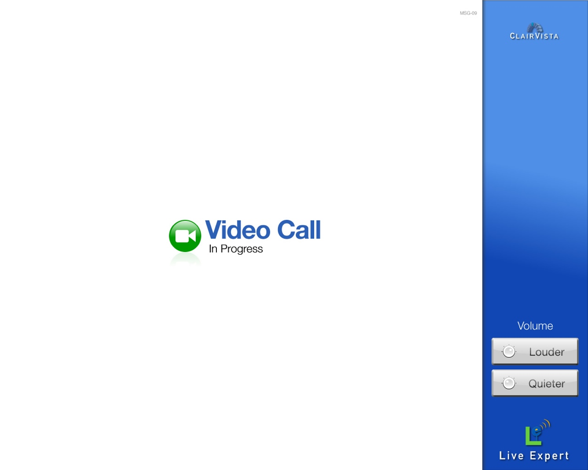{kind=link}
Bottom Display: MSG-09
Call begins.
UI-09 Video Call - Content Sharing¶
An example of sharing Live Expert database-store data with the customer.
Top Display: The agent.
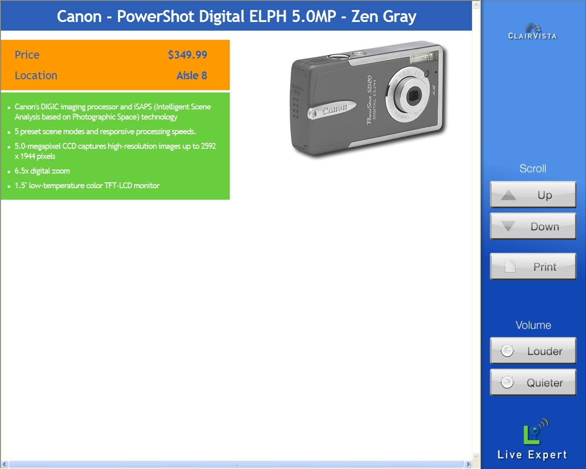{kind=link}
Bottom Display:
Product Summary
The data and the display styles are customizable for Live Expert stored data. Browser controls are displayed in the sidebar.
Other examples of content sharing:
Live Expert Database
- Large product images
- Product specs
- Product comparison lists
- Product-specific pages from retail web sites
Other
- Web sites and pages
- Videos (FLASH, WMV)
UI-10 Survey Question¶
At the conclusion of the video call, the customer is presented with a question about the service.
Top Display: The top display dims.
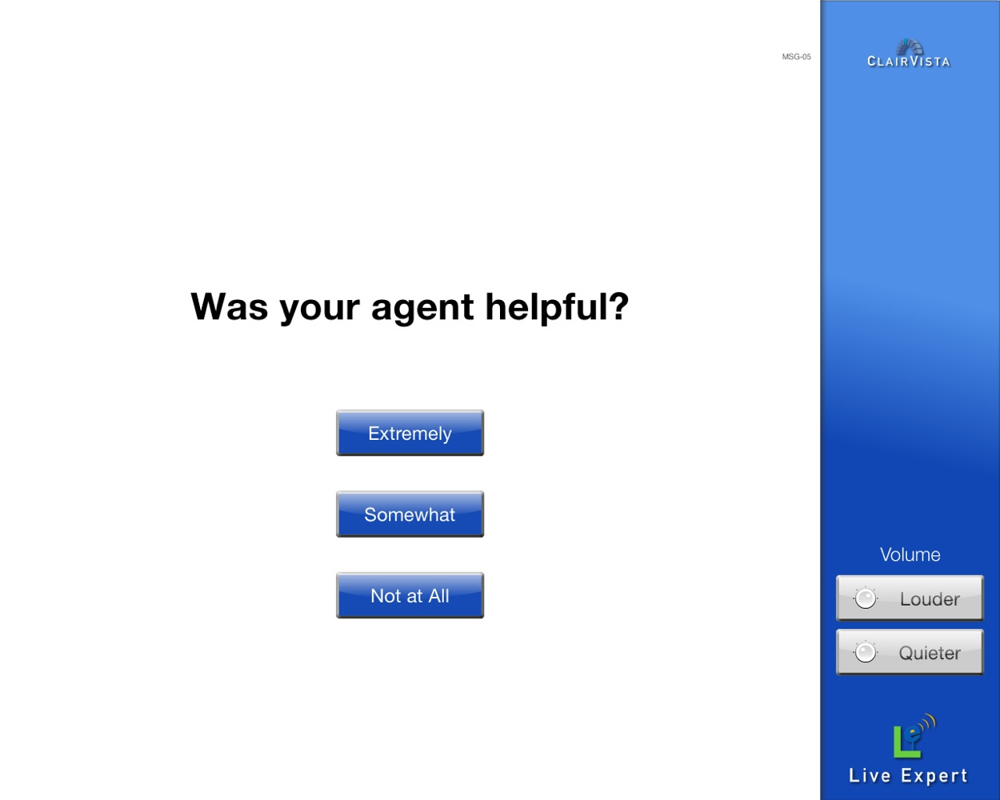{kind=link}
Bottom Display: MSG-05
The customer is presented with a survey question.
UI-11 Survey Response¶
Live Expert has good manners. The message is displayed for a configurable nubmer of seconds and then the Expert Station returns to Attract Loop mode.
Top Display: The top display dims.
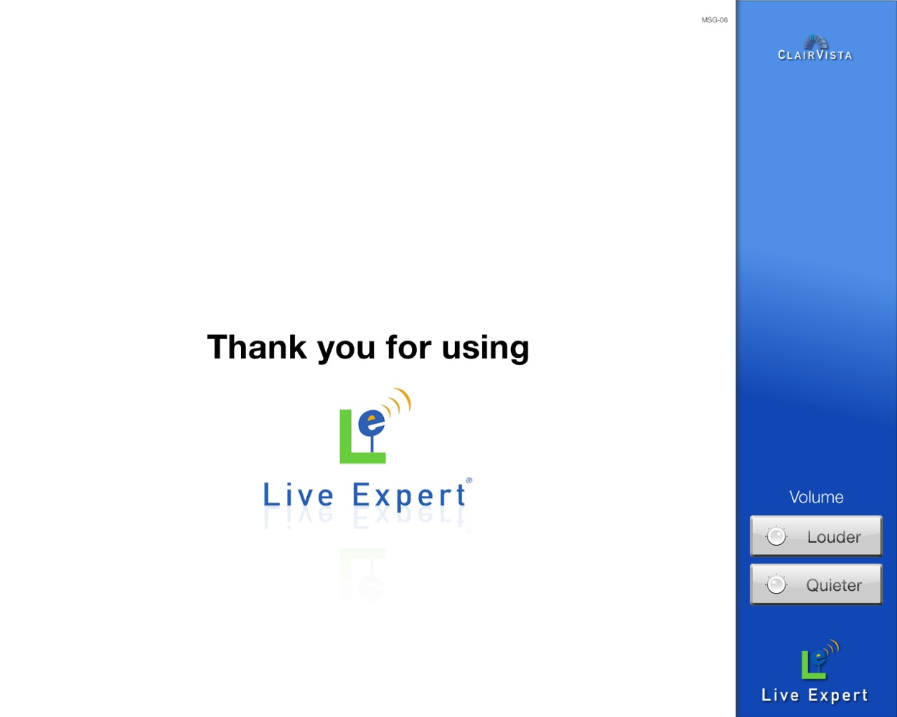{kind=link}
Bottom Display: MSG-06
A survey response message is presented.
UI-12 Communications Error¶
Sometimes unexpected things happen. If the Expert Station loses connection to the Enterprise or a video call is interrupted, the communications error message is displayed until the Expert Station successfully reconnects to the Enterprise (it tries once each minute in these cases)
Top Display: The top display dims.
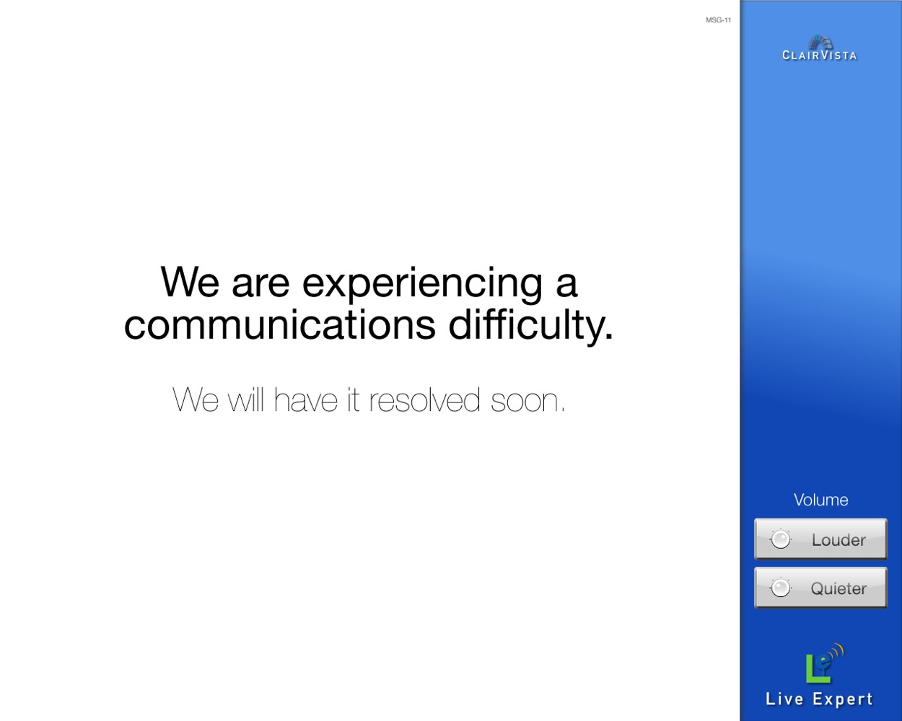{kind=link}
Bottom Display: MSG-08
A communications error is displayed for the customer.
{kind=link}
{kind=link}